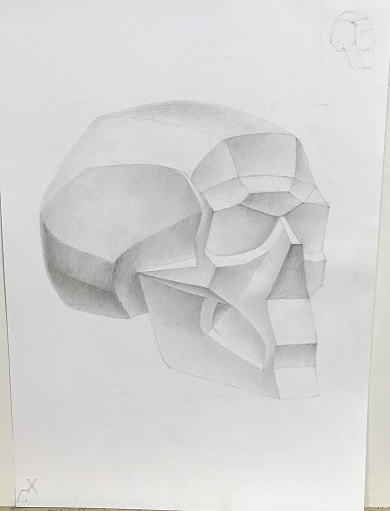
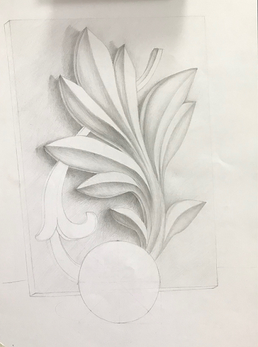
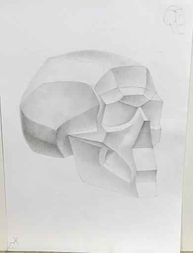
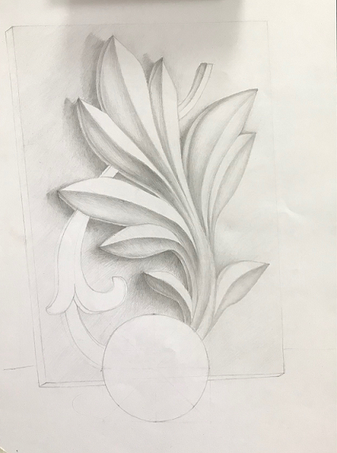
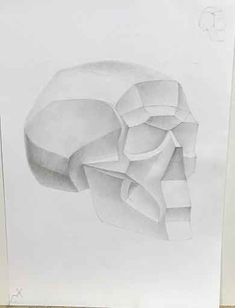
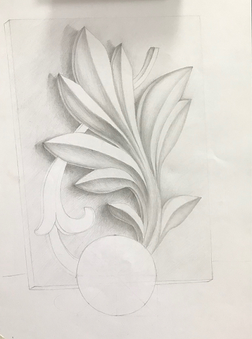

Моє позашкільне життя
включає багатогранність моєї особистості однією із граней є художнє мистецтво, як им я займаюсь з раннього дитинства. Перши м моïм полотном для творчого волевиявленн я стала стіна вітальні. На даний момент, я закінчила державну художню школу і прод овжую удосконалювати навики в художній ст удії. Кілька моїх робіт (декілька з остан
ix) можна побачити нижче.
Вид роботи - живопис:
Вид роботи - рисунок:


Значну частину свого часу я приділяю підготовці до ЗНО, яке я буду склада ти уже наступного навчального року.
Більшість(80%) мого вільного часу займає виконання домашнього завдання. Цього року шкільна програма дуже важка і домашнього в рази більше, ніж було до 10-го класу.
Коли у мене з'являється вільна хвилинка, люблю відволікатись на американськ і серіали з незвичними сюжетами. Пропоную, Вам, переглюнути трейлер (на зображенні є посилання на дуже класний сайт з оригiнальним англійським мовленням, також там є можливість вибрати субтитри).


 





 Інстаграм:
Інстаграм:  Телеграм:
Телеграм: